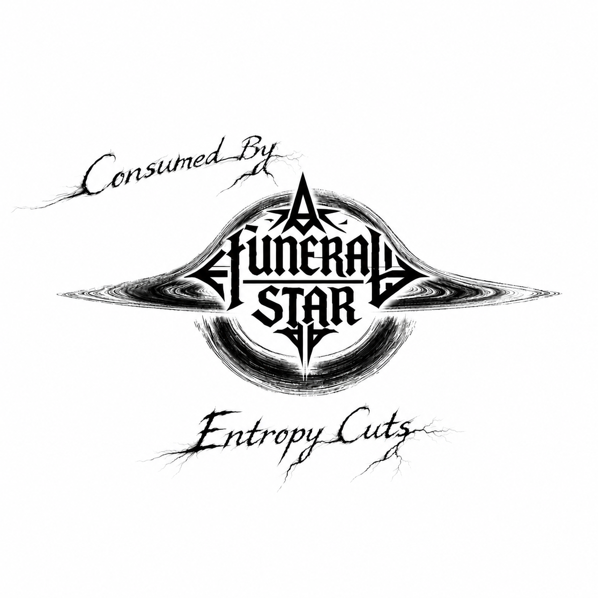

07 / Consumed Variants
Entropy
Consumed by a Funeral Star — Entropy Cuts
Across the spirals of cosmic ice Ancient shadows twist through the void In halls of endless midnight Bound by frost, yet forged in light Cold winds calling (calling) Beyond the gates (beyond) Beneath celestial banners, the stars align Drifting through a blackened dream Eternal riders on frozen streams With fire in the veins of time Spectral voices echo from afar Infinite silence torn apart Across the spirals of cosmic ice Ancient shadows twist through the void In halls of endless midnight Bound by frost, yet forged in light Cold winds calling (calling) Beyond the gates (beyond) Infinite night devours meaning Spinning, silent, lost within Fractured thought dissolves to ether Insignificance sharp beneath skin Suns collapsing, all reason shivers A dread deeper than winter's reach Memories erode in stellar rivers Existence cracks with every breach Watcher unseen, patient and cold Hallowed terror no will can hold Across the spirals of cosmic ice Ancient shadows twist through the void In halls of endless midnight Bound by frost, yet forged in light Cold winds calling (calling) Beyond the gates (beyond) Torn open by silence so ancient and vast Devoured by orbits of emptiness The mind spirals screaming, hope is unmasked No solace in chaos, no ending, no rest Gaze adrift through eons unnamed Futility carved in every grain Across the spirals of cosmic ice Ancient shadows twist through the void In halls of endless midnight Bound by frost, yet forged in light Cold winds calling (calling) Beyond the gates (beyond) See me vanish, atom by atom A thought erased in the eyes of stars Nameless, voiceless, cast away forgotten Swallowed whole where no memory mars In silence deeper than distance, I drift Realm of nothing, crowned by dread A shadow dissolves at the edge of sense Purpose faded, all colors bled Cold eternity unending Names dissolve in silent spinning Grasping for a trace, never finding Adrift through time, all light declining Cold eternity unending Names dissolve in silent spinning Grasping for a trace, never finding Adrift through time, all light decliningBack to discography